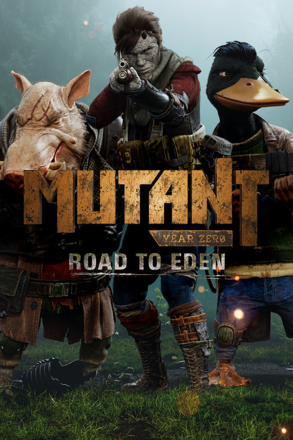

Mutant Year Zero: Road to Eden
Mutant Year Zero: Road to Eden
Details
|  | |
| Playtime | Not Played |
| Last Activity | Never |
| Added | 6/3/2022 4:21:14 |
| Modified | 10/19/2022 18:39:56 |
| Completion Status | Not Played |
| Library | Epic |
| Source | Epic |
| Platform | Steam |
| Release Date | 12/4/2018 |
| Community Score | 89 |
| Critic Score | 78 |
| User Score | |
| Genre | RPG Strategy |
| Developer | The Bearded Ladies |
| Publisher | Funcom |
| Feature | Achievements Cloud Saves Full Controller Support Remote Play On Tablet Remote Play On TV Single Player Trading Cards |
| Links | Community Hub Discussions Guides News Store Page PCGamingWiki Achievements |
| Tag | |
Description
“By blending real-time stealth with tried-and-true tactics gameplay, Mutant Year Zero: Road to Eden breaks exciting new ground for the turn-based strategy game.” - IGN
From a team including former designers of HITMAN and PAYDAY comes Mutant Year Zero: Road to Eden, a tactical game that combines the turn-based combat of XCOM with real-time stealth and exploration of a post-human world reclaimed by nature… and Mutants.
Of course the world ends.
It was just a question of time. Extreme climate change, global economic crisis, a lethal pandemic, and increasing tension between old and new superpowers. For the first time since 1945 nuclear weapons were used in armed conflict. Mushroom clouds rose from east to west before the dust settled.
Now it’s over and the Earth is still. Nature has invaded ruined cities. Wind sweeps through empty streets, turned into graveyards.
The humans are all gone. Scavenging through the remains of civilization are the Mutants, deformed humanoids and animals alike, searching for salvation or just something to eat. To survive, you and your companions must venture out to explore the Zone.
Maybe one day you will find the Eden of legends, the ancients’ haven in the middle of hell. That’s where truth awaits, the stories say. Maybe you will find your answers there.
Then again, maybe it’s all bullshit.
TACTICAL COMBAT

Mutant Year Zero: Road to Eden is the ultimate fix for your tactical strategy addiction. Dive into a deep, turn-based, tactical combat system inspired by the XCOM games.
EXPLORE A POST-HUMAN EARTH

Journey through a post-human world of abandoned cities, crumbling highways, and overgrown countryside. Check back at the Ark, a neon-bathed oasis of ill repute and questionable characters, to restock your supplies and plan out your next adventure.
CONTROL A TEAM OF MUTANTS

A duck with an attitude problem and a boar with anger issues; these aren’t your typical heroes. Get to know Dux, Bormin, Selma, and many other characters each with their own unique personality and deranged perspective on the world and their situation.
MASTER THE STEALTHY APPROACH

Sneak through shadows to avoid conflict or to catch enemies unaware. Real-time stealth allows you full control of approach: sneak into an enemy camp, position the team of Mutants to your advantage, and gain the element of surprise.
UNLOCK MUTATIONS

Unlock new mutations and abilities for your Mutants, such as Selma’s grasping vines, Bormin’s Charge, and Dux‘ uncanny ability to sneak into a camp full of enemies unnoticed, despite being a 4-foot tall walking, talking duck with a crossbow.
DYNAMIC ENVIRONMENT

Use the environment to your advantage. Stay out of floodlights, hide from line of sight, or just blast down fully destructible walls and buildings and wreak utter havoc.
LOOT, LOOT EVERYWHERE

From makeshift slingshots to high-powered rifles and top hats to police vests, make sure you equip your Mutants for the dangers ahead. Nothing says post-human quite like a mutated boar in spiked metal armor charging at you with a blunderbuss in his hands.